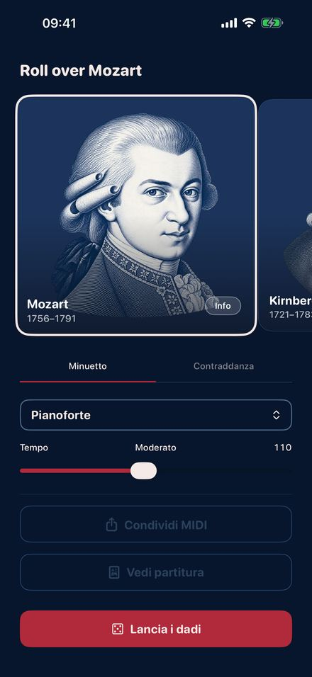
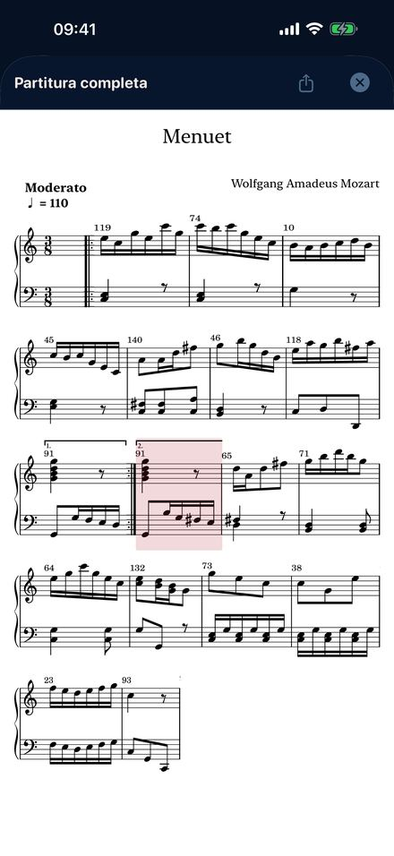
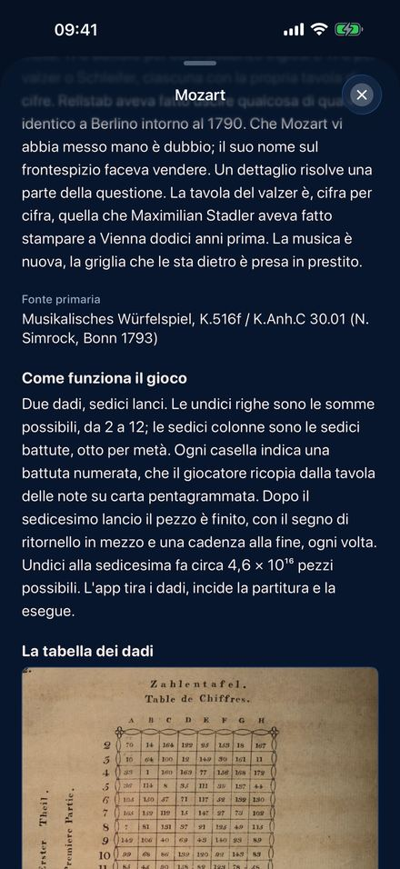
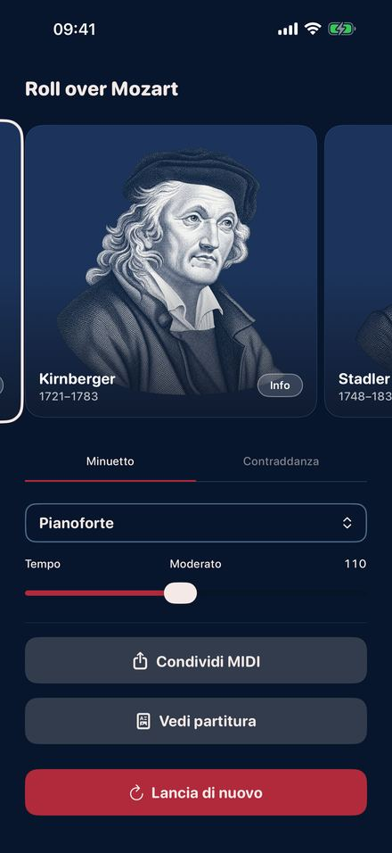

Nel Settecento uscirono giochi a stampa con cui chiunque poteva comporre senza
saper leggere una nota. Ogni tiro indica una battuta numerata in una tabella.
Sedici tiri danno un pezzo compiuto, nella tonalità giusta e con una cadenza a
regola d'arte in chiusura. Roll Over Mozart suona quattro di quei giochi, battuta
per battuta, seguendo le tabelle originali.
Presto sull'App Store.

Tira i dadi

La partitura del tuo tiro

La tavola originale

Quattro compositori
Quattro giochi a stampa
MozartIl Musikalisches Würfelspiel uscito a suo nome a Bonn nel 1793: un minuetto e una controdanza inglese, 176 battute numerate ciascuno, due dadi, sedici tiri.
KirnbergerBerlino 1757, il più antico di tutti. Minuetto e trio con un dado solo, e una polacca di 154 battute con due.
StadlerVienna 1781. Minuetto e trio di un benedettino che conobbe da vicino sia Mozart sia Haydn, stampato dodici anni prima che il gioco di Mozart ne riprendesse la griglia di cifre.
C.P.E. BachSei battute di contrappunto doppio “senza conoscerne le regole”. Qualsiasi voce superiore sta con qualsiasi voce inferiore, e Bach lo scrive con la faccia seria.
Che cosa ci fai
Tiri, e senti subito il risultato.
Cambi strumento e tempo mentre il pezzo suona.
Segui la partitura del tuo tiro, battuta per battuta, mentre risuona.
La porti via: partitura in PDF, o un file MIDI per qualsiasi programma musicale.
Leggi la storia di ogni stampa, con la tavola dei dadi originale e le pagine di battute numerate.
Qui non si inventa niente
Ogni battuta è del compositore ed è stata stampata nel Settecento, ripresa senza
cambiare una nota. I dadi decidono solo l'ordine, esattamente come era previsto.
È la musica generativa più antica che conosciamo, duecentocinquant'anni prima del
primo chatbot.
E inoltre
Undici strumenti, dal pianoforte e il clavicembalo al violino, al flauto e
all'organo da chiesa. Tempo da strascicato a scattante. Sei lingue. Nessun
account, nessuna pubblicità, nessun tracciamento, e funziona in modalità aereo.
iPhone e iPad con iOS 26.2 o successivo.